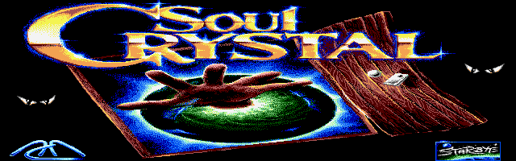
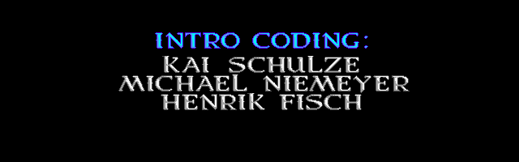
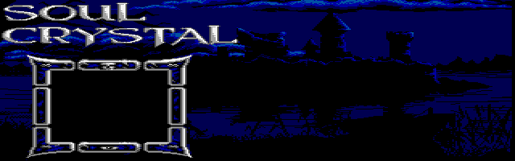
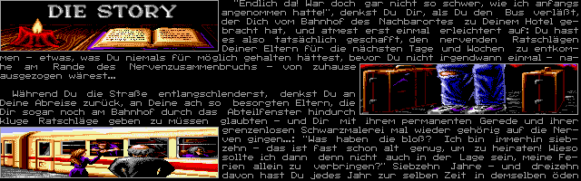
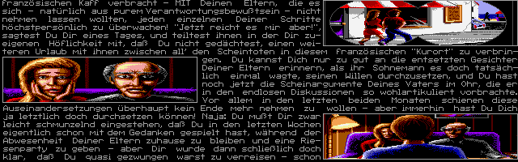
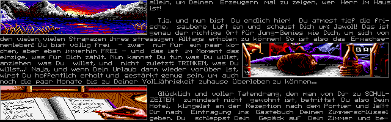
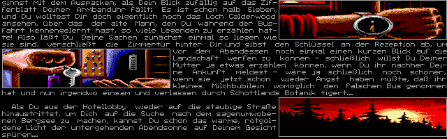
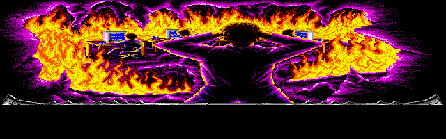
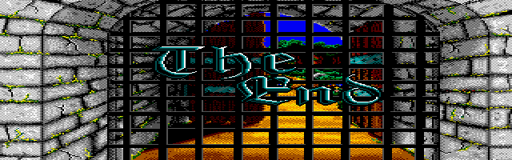
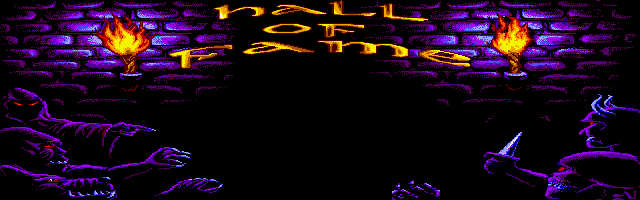

Soul Crystal — DOS The configured VGA mode is 640 × 480 on a 4:3 screen. The game doubles stored rows for room, intro and credits artwork; this is software drawing, not a screen aspect correction. Grouped by game part and shared resources. The installed DOS copy does not preserve the original floppy assignments, so these groups are not disk numbers. ANIMS.PIC frames are not yet decoded; assets without embedded palettes retain the extractor's EGA fallback palette.
200 images. Original PNG dimensions are preserved. VGA presentation is shown by default: room, intro and credits rows are doubled; other assets retain their stored dimensions.
Show stored pixels
Intro (26) Part A (18) Part B (45) Part C (20) Part D (55) Shared (36) Intro intro_000.png · 640 × 200 intro_001.png · 640 × 200 
intro_002.png · 640 × 200 intro_003.png · 640 × 200 intro_004.png · 640 × 200 intro_005.png · 640 × 200 intro_006.png · 640 × 200 intro_007.png · 640 × 200 intro_008.png · 640 × 200 intro_009.png · 640 × 200 intro_010.png · 640 × 200 intro_011.png · 640 × 200 intro_012.png · 640 × 200 
intro_013.png · 640 × 200 intro_014.png · 640 × 200 intro_015.png · 640 × 200 intro_016.png · 640 × 200 intro_017.png · 640 × 200 
intro_018.png · 640 × 200 
intro_019.png · 640 × 200 
intro_020.png · 640 × 200 
intro_021.png · 640 × 200 
intro_022.png · 640 × 200 
intro_023.png · 640 × 200 
intro_024.png · 640 × 200 
intro_025.png · 640 × 200 Part A parta_000.png · 352 × 64 parta_001.png · 352 × 64 parta_002.png · 352 × 64 parta_003.png · 352 × 64 parta_004.png · 352 × 64 parta_005.png · 352 × 64 parta_006.png · 352 × 64 parta_007.png · 352 × 64 parta_008.png · 352 × 64 parta_009.png · 352 × 64 parta_010.png · 352 × 64 parta_011.png · 352 × 64 parta_012.png · 352 × 64 parta_013.png · 352 × 64 parta_014.png · 352 × 64 parta_015.png · 352 × 64 parta_016.png · 352 × 64 parta_017.png · 352 × 64 Part B partb1_000.png · 352 × 64 partb1_001.png · 352 × 64 partb1_002.png · 352 × 64 partb1_003.png · 352 × 64 partb1_004.png · 352 × 64 partb1_005.png · 352 × 64 partb1_006.png · 352 × 64 partb1_007.png · 352 × 64 partb1_008.png · 352 × 64 partb1_009.png · 352 × 64 partb1_010.png · 352 × 64 partb1_011.png · 352 × 64 partb1_012.png · 352 × 64 partb1_013.png · 352 × 64 partb1_014.png · 352 × 64 partb1_015.png · 352 × 64 partb1_016.png · 352 × 64 partb1_017.png · 352 × 64 partb1_018.png · 352 × 64 partb1_019.png · 352 × 64 partb1_020.png · 352 × 64 partb2_000.png · 352 × 64 partb2_001.png · 352 × 64 partb2_002.png · 352 × 64 partb2_003.png · 352 × 64 partb2_004.png · 352 × 64 partb2_005.png · 352 × 64 partb2_006.png · 352 × 64 partb2_007.png · 352 × 64 partb2_008.png · 352 × 64 partb2_009.png · 352 × 64 partb2_010.png · 352 × 64 partb2_011.png · 352 × 64 partb2_012.png · 352 × 64 partb2_013.png · 352 × 64 partb2_014.png · 352 × 64 partb2_015.png · 352 × 64 partb2_016.png · 352 × 64 partb2_017.png · 352 × 64 partb2_018.png · 352 × 64 partb2_019.png · 352 × 64 partb2_020.png · 352 × 64 partb2_021.png · 352 × 64 partb2_022.png · 352 × 64 partb2_023.png · 352 × 64 Part C partc_000.png · 352 × 64 partc_001.png · 352 × 64 partc_002.png · 352 × 64 partc_003.png · 352 × 64 partc_004.png · 352 × 64 partc_005.png · 352 × 64 partc_006.png · 352 × 64 partc_007.png · 352 × 64 partc_008.png · 352 × 64 partc_009.png · 352 × 64 partc_010.png · 352 × 64 partc_011.png · 352 × 64 partc_012.png · 352 × 64 partc_013.png · 352 × 64 partc_014.png · 352 × 64 partc_015.png · 352 × 64 partc_016.png · 352 × 64 partc_017.png · 352 × 64 partc_018.png · 352 × 64 partc_019.png · 352 × 64 Part D partd1_000.png · 352 × 64 partd1_001.png · 352 × 64 partd1_002.png · 352 × 64 partd1_003.png · 352 × 64 partd1_004.png · 352 × 64 partd1_005.png · 352 × 64 partd1_006.png · 352 × 64 partd1_007.png · 352 × 64 partd1_008.png · 352 × 64 partd1_009.png · 352 × 64 partd1_010.png · 352 × 64 partd1_011.png · 352 × 64 partd1_012.png · 352 × 64 partd1_013.png · 352 × 64 partd1_014.png · 352 × 64 partd1_015.png · 352 × 64 partd1_016.png · 352 × 64 partd1_017.png · 352 × 64 partd1_018.png · 352 × 64 partd1_019.png · 352 × 64 partd1_020.png · 352 × 64 partd1_021.png · 352 × 64 partd1_022.png · 352 × 64 partd1_023.png · 352 × 64 partd2_000.png · 352 × 64 partd2_001.png · 352 × 64 partd2_002.png · 352 × 64 partd2_003.png · 352 × 64 partd2_004.png · 352 × 64 partd2_005.png · 352 × 64 partd2_006.png · 352 × 64 partd2_007.png · 352 × 64 partd2_008.png · 352 × 64 partd2_009.png · 352 × 64 partd2_010.png · 352 × 64 partd2_011.png · 352 × 64 partd2_012.png · 352 × 64 partd2_013.png · 352 × 64 partd2_014.png · 352 × 64 partd2_015.png · 352 × 64 partd2_016.png · 352 × 64 partd2_017.png · 352 × 64 partd2_018.png · 352 × 64 partd2_019.png · 352 × 64 partd2_020.png · 352 × 64 partd2_021.png · 352 × 64 partd2_022.png · 352 × 64 partd2_023.png · 352 × 64 partd2_024.png · 352 × 64 partd2_025.png · 352 × 64 partd2_026.png · 352 × 64 partd2_027.png · 352 × 64 partd2_028.png · 352 × 64 partd2_029.png · 352 × 64 partd2_030.png · 352 × 64